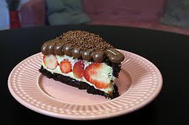

Bolo em 15 minutos
Faça um bolo sem saber cozinhar
Por Erick Jacquim
Preciso saber cozinhar?
Faça deliciosos bolos de todos os sabores sem nenhum ingrediente ou experiência na cozinha. Nâo seja a vergonha da profission
Ingredientes
- Farinha
- Ovo
- Açucar
- Leite
- Fermento
Modo de fazer
- Quebrar os ovos
- Misturar junto com a farinha
- Adicionar açucar e fermento
- Assar por 12 minutos
Resultado
